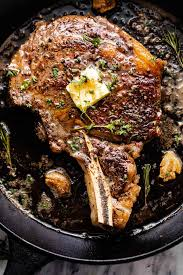

Description
Grilled Balsamic and Soy Marinated Flank Steak
Flank steak is a perfect grilling meat. It's marbleized with fat that melts while grilling and fills the meat with the flavor of natural juices. If you have a lot of marinade leftover from this recipe, save it in your refrigerator and use it to marinate other grilled meats or chicken; it will last up to one week.
Ingredients
- ½ onion, chopped
- 3 cloves garlic, chopped
- ¼ cup olive oil
- ¼ cup balsamic vinegar
- ¼ cup soy sauce
- 1 tablespoon Dijon mustard
- 1 tablespoon rosemary
- 1 teaspoon salt
- ½ teaspoon ground black pepper
- 1 ½ pounds flank steak
Steps
- Whisk onion, garlic, olive oil, balsamic vinegar, soy sauce, Dijon mustard, rosemary, salt, and pepper together in a mixing bowl.
- Put the flank steak in a large resealable plastic bag. Pour marinade into the bag and coat steak with the marinade. Squeeze excess air from the bag and seal. Marinate in the refrigerator at least 30 minutes, up to 2 days.
- Preheat an outdoor grill for medium-high heat and lightly oil the grate.
- Remove the flank steak from the marinade and shake to remove excess liquid. Reserve marinade.
- Cook steak until firm, hot in the center, and just turning from pink to grey, 6 to 8 minutes per side, brushing occasionally with reserved marinade. An instant-read thermometer inserted into the center should read 150 degrees F (65 degrees C). Remove steak to a cutting board and rest meat 5 minutes before slicing thinly across the grain.
All recipes